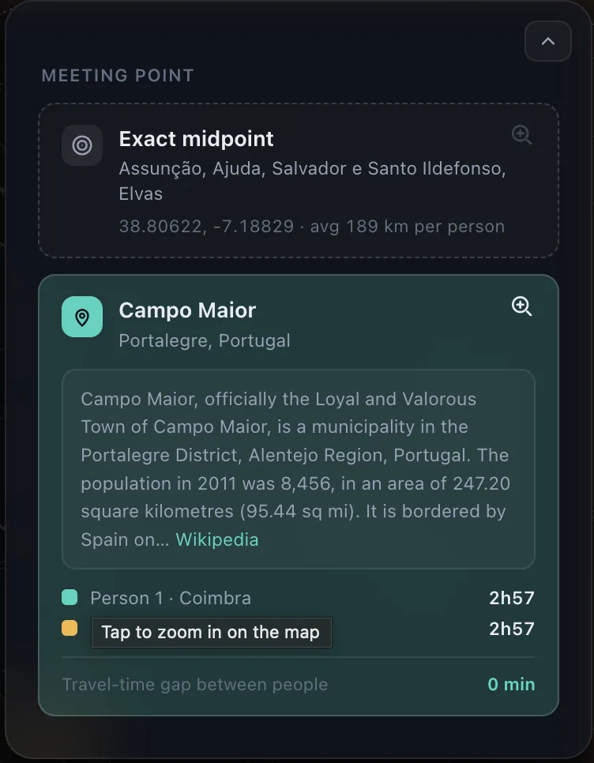
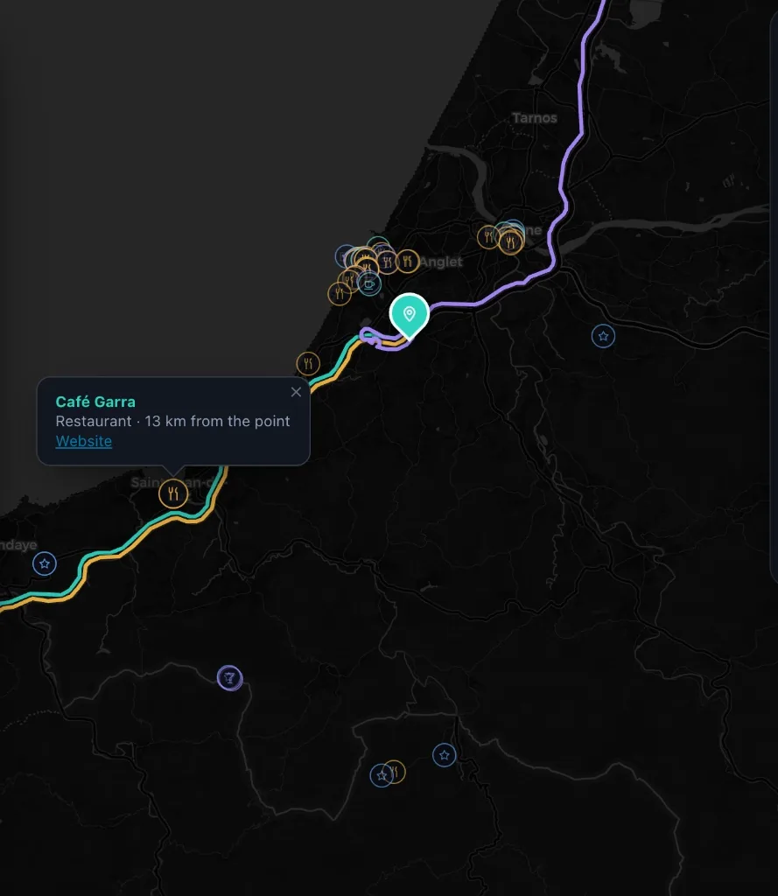
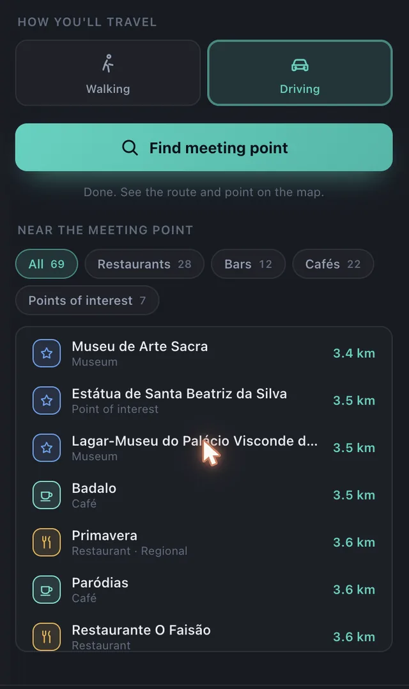
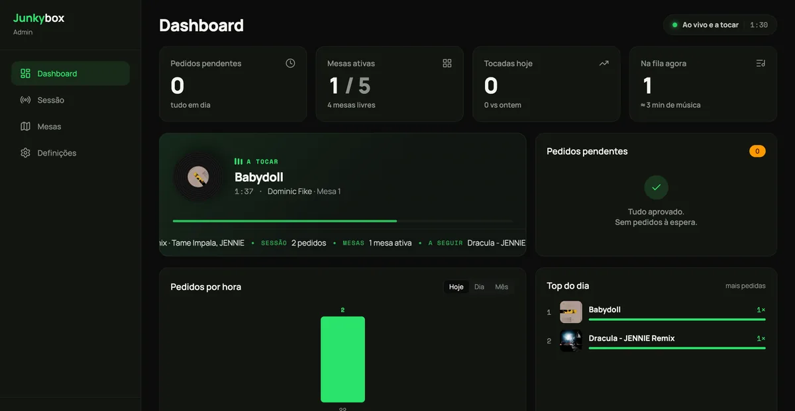
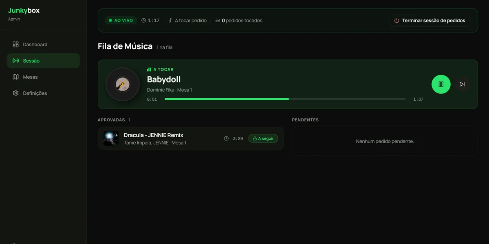
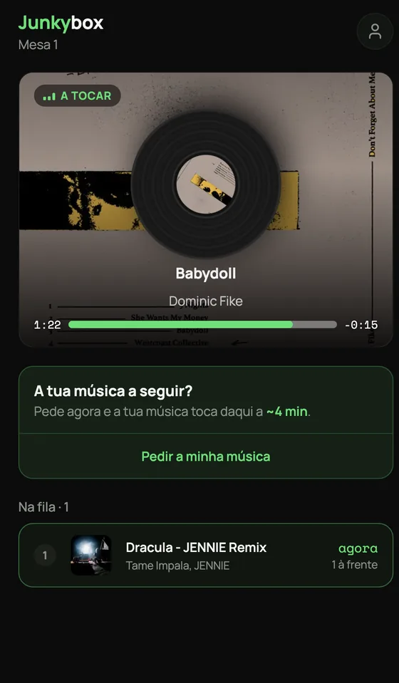

Everyone marks where they are. It finds the point
from which all of them travel the same, and tells you what is there.
Two answers per search. The exact
midpoint, equidistant and quite often at sea, and the one on real
roads that everyone actually reaches in the same time.
Vanilla JS
Leaflet
OSRM
Overpass
Nominatim
No build step
What it is
Add the people, pick walking or driving, and the map answers with
a place: a town, its region, and a line of its history. Everyone
gets a route in their own colour with their travel time on it, so
the fairness is something you can read rather than take on trust.
The exact midpoint, where nobody is further from the meeting than anyone else
The realistic meeting point, snapped to roads and picked so the longest trip is as short as it can be
The gap between the longest and shortest trip, which is the number the search is trying to get to zero
Restaurants, bars, cafés and points of interest around the answer, sorted by distance
What a search answers with

Two people out of Coimbra and somewhere east of it, and
the gap between their trips is zero. The exact midpoint landed in
a field outside Elvas, so the meeting is in Campo Maior, with the
first paragraph Wikipedia has on it.

Zoomed in, the routes share the last few kilometres of
road. They are drawn a few pixels apart so all three stay
readable, and the places around the point are tinted by what they
are.

What is worth the trip once you are there. The tabs
count what they hold, and walking searches a couple of kilometres
where driving searches tens.
Motivation
Meeting halfway is normally settled by whoever gives in first, and
someone always drives twice as long while insisting they do not
mind. I wanted the argument replaced by a number. The exact
midpoint is the other half of it: usually it is open water and
useless, but every so often it lands on a small town nobody in the
group has heard of, and then the answer to where should we meet is
somewhere you have to go and look up.
Purpose
Run a real optimisation loop in a browser tab. One static page, no
backend, no API keys and no sign-up, on public services that owe me
nothing: OSRM for the roads, Nominatim for the addresses, Overpass
for the places, Wikipedia for the history.
Challenges
The fair point is not the average of the coordinates. Averaging
puts three friends in the Bay of Biscay, and even the true
equidistant point is only fair as the crow flies, which nobody
travels.
Candidates are sampled along the real routes between people, then refined on shrinking rings until the travel times stop moving apart
Every service is public and rate limited: one request a second to Nominatim, mirrors of Overpass that return an error page with a 200, and a demo routing server that throttles bursts
Routes that converge on the same road hide one another, so each is shifted sideways in screen pixels and recomputed on every zoom
The panels float over the map, so fitting the view has to account for the pixels they cover or the answer lands underneath them
What I learned
Nobody gets the short straw has a name in geometry: it is the Chebyshev centre, and on a sphere you reach it by core set iteration
Scoring candidates by twice the worst trip minus the best one, which rewards a low ceiling and punishes a lucky winner
Being a good guest on free infrastructure: a queue with a gap in it, backoff that knows which errors will never come good, and a cache that survives reloads
Leaflet past the tutorial, where you draw your own things in screen space and take its click handling apart
How much of a design reads as illustration when it is really two gradients and a border radius
A digital jukebox app designed for parties and venues.
One process, one live queue. Every guest
request lands in Spotify’s own playback, in real time.
Next.js 16
App Router
SSE
Spotify Web API
Auth.js
What it is
The host or venue connects their Spotify account, allowing guests to
scan a QR code, search for songs, and submit requests to a shared
queue. Staff or hosts manage live playback through a real-time
dashboard while setting custom rules for moderation.
Approving or rejecting requests manually, or enabling automatic approval in real time
Moderation rules like blocked artists, explicit content filters, and song limits per device
Session summary reports with insights and statistics about requests and user activity
Inside the app

The staff dashboard: pending requests, active tables,
and what is playing right now.

The live session: the queue, what is approved, and what is
up next.

What a guest gets after scanning the QR code on their table
No app to install, and an honest estimate of how long until
their song plays.
Motivation
What started as a side project between a friend and me grew out of a
shared frustration with static, boring party playlists. We wanted to
create an interactive music experience that engages everyone in the
room and eliminates constant manual requests to the host or bartender,
all wrapped in a clean, modern interface designed for both staff and
guests.
Purpose
To build a single-process, real-time web application using Next.js 16
(App Router) with Server-Sent Events (SSE) and master complex
integration with the Spotify Web API for live, synchronized playback
control.
Challenges
Maintaining precise real-time synchronization between client requests
and Spotify’s native queue without exceeding API rate limits or
suffering timing drift. On the product side, the main challenge was
designing an interface engaging enough to encourage user participation
while giving hosts strict, effortless control over the vibe.
What I learned
Through this project, I gained hands-on experience in full-stack
architecture and real-time systems, specifically:
Implementing custom long-running background workers within Next.js
Managing native Spotify queue synchronization and handling API rate-limiting constraints
Structuring multi-role authentication (staff vs. customer) using Auth.js
Streaming lightweight live updates using Server-Sent Events (SSE) instead of heavier WebSockets
Prototyping and building modern UI designs using Claude Design
A lighthearted personal portfolio built around a pun
on one of my family names (Boal + Bulbasaur).
Five leaf greens, one ink, one bone-white
for the console. The entire page is mixed from these.
HTML
CSS
Vanilla JS
No build step
What it is
Retro game-inspired UI touches
Custom scroll animations
Slide-out project documentation panel
Motivation
I needed a single spot to organize all my projects without creating
another generic portfolio. Plot twist: I am not actually a big
Pokémon fan (no offense to the die-hard fans out there!).
Purpose
Build an ultra fast, zero dependency static site using pure HTML,
CSS, and vanilla JS while sharpening my UI interaction skills without
relying on heavy frameworks.
Challenges
Balancing fun visual quirks with smooth performance.
Mapping custom falling-leaf physics directly to scroll progress
Managing modal accessibility and focus states cleanly
Keeping layout overflow tight across all viewports
What I learned
How far vanilla JS and modern CSS can take you without npm packages
Deep dive into IntersectionObserver performance tuning
A small visual pun makes a developer portfolio infinitely more memorable